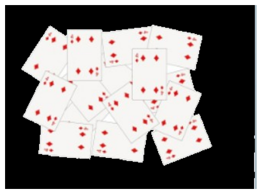
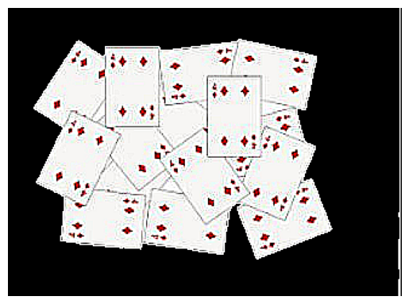
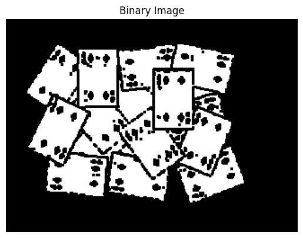
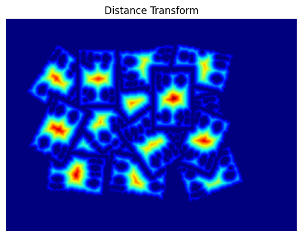
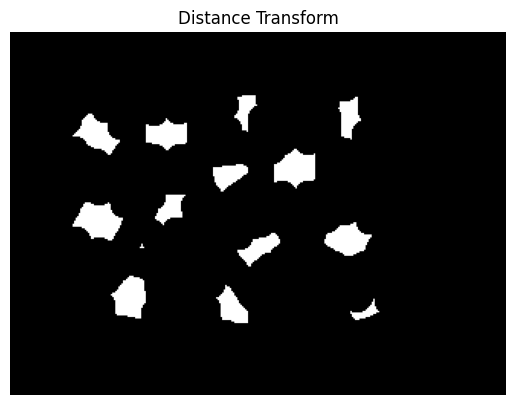
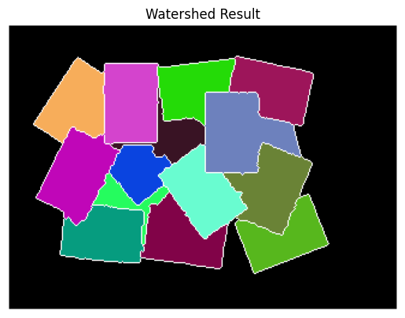

Principe de l’algorithme Watershed
L’algorithme Watershed (ligne de partage des eaux) est une méthode de segmentation d’images basée sur une analogie topographique. L’image est interprétée comme une surface en relief où l’intensité des pixels représente l’altitude.
Les zones de faible intensité correspondent à des bassins, tandis que les zones de forte intensité représentent des crêtes. L’objectif est de séparer automatiquement les régions adjacentes.
Prétraitement de l’image
L’image est d’abord convertie en niveaux de gris, puis filtrée (par exemple avec un flou gaussien) afin de réduire le bruit :
où \(G_{\sigma}\) est un noyau gaussien de variance \(\sigma\).
Prétraitement de l'image
Après avoir fait un flou gaussien les bords des objets sont souvent peu net. On utilise souvent une dérivé seconde pour les renforcer
Amélioration des bords de l'image
Binarisation
Une image binaire est obtenue par seuillage. Le fait qu'elle ne soit pas net est un effet recherché en fonction des sujets pour créer un seul marqueur par objet (commme expliquer ci-dessous)
Binarisation de l'image
Transformation de distance
OpenCV utilise la distance transform pour estimer la distance de chaque pixel d’objet au pixel de fond le plus proche :
$$ D(x,y) = \min_{(x',y') \in \text{fond}} \sqrt{(x-x')^2 + (y-y')^2} $$
Les maxima locaux de cette carte correspondent généralement au centre des objets.
Evaluation de la distance des pixels aux bords
Définition des marqueurs
Les marqueurs sont des régions initiales à partir desquelles le remplissage va commencer. On distingue :
- les marqueurs de premier plan (objets sûrs)
- les marqueurs d’arrière-plan (fond sûr)
Pour les marqueurs objet on utilise un seuillage de l'évaluation de distance fait précédement. C'est donc important d'avoir seulement un marqueur par objet et donc d'adapter le pré-traitement en fonction de l'image.
Seuillage pour définir les marqueurs premier plan
Le marqueur de fond est generalement juste placé arbitrairement là ou il n'y a jamais d'objets.
Application de l’algorithme Watershed
La fonction watershed traite l’image comme une surface topographique. Les bassins sont remplis progressivement à partir des marqueurs, jusqu’à ce que deux bassins entrent en collision.
Les pixels situés sur ces frontières sont marqués comme lignes de séparation :
$$ W(x,y) = -1 $$
Ces lignes correspondent aux contours des objets segmentés.
Résultat final
Chaque région segmentée possède une étiquette distincte. Les frontières issues du watershed permettent une séparation précise des objets même lorsqu’ils sont collés ou se chevauchent.
Cette méthode est particulièrement efficace pour la segmentation d’objets biologiques, de cellules ou de particules en vision par ordinateur.
Resultat de l'algorithme watershed
Algorithme Watershed en Python
import cv2 as cv
import numpy as np
import argparse
import random as rng
import matplotlib.pyplot as plt
src = cv.imread('carte.jpg')
src_rgb = cv.cvtColor(src, cv.COLOR_BGR2RGB)
#src = cv.resize(src, (src.shape[1]//4, src.shape[0]//4))
#src_rgb = cv.resize(src_rgb, (src_rgb.shape[1]//4, src_rgb.shape[0]//4))
gray = cv.cvtColor(src, cv.COLOR_BGR2GRAY)
gray = cv.GaussianBlur(gray,(3,3),0)
_, thresh = cv.threshold(gray,240, 255, cv.THRESH_BINARY) #si pixel valeur au dessus de 250 met la valeur a 255
thresh = ~thresh # --> objet en blanc !
plt.imshow(thresh, cmap = 'gray')
plt.axis('off') # Hide axes
plt.show()
#Trouver les contousr externes
contours, _ = cv.findContours(thresh, cv.RETR_EXTERNAL, cv.CHAIN_APPROX_SIMPLE)
# Créer un masque noir
mask = np.zeros_like(gray)
# Dessiner le contour externe dans le masque (rempli = -1)
cv.drawContours(mask, contours, -1, 255, thickness=cv.FILLED)
# Appliquer le masque sur chaque canal RGB
masked = cv.bitwise_and(src_rgb, src_rgb, mask=mask) # ça garde l’image là où mask == 255, et met le reste à noir
# src_rgb[np.all(src_rgb == 255, axis=2)] = 0 >> peut marcher aussi
# Affichage
plt.imshow(masked, cmap ='gray')
plt.axis('off') # Hide axes
plt.show()
kernel = np.array([[1, 1, 1], [1, -8, 1], [1, 1, 1]], dtype=np.float32) # appro derivé seconde
imgLaplacian = cv.filter2D(masked, cv.CV_32F, kernel) # image des bords du coup
original = np.float32(masked)
imgResult = original - imgLaplacian
# convert back to 8bits gray scale
imgResult = np.clip(imgResult, 0, 255) # limite les valeurs en 0 et 255
imgResult = imgResult.astype('uint8') # image en couleur
imgLaplacian = np.clip(imgLaplacian, 0, 255)
imgLaplacian = np.uint8(imgLaplacian)
plt.imshow(imgLaplacian)
plt.axis('off') # Hide axes
plt.show()
plt.imshow(imgResult)
plt.axis('off') # Hide axes
plt.show()
# Convertir en niveaux de gris
bw = cv.cvtColor(imgResult, cv.COLOR_BGR2GRAY)
blur = cv.GaussianBlur(bw, (3, 3), 0)
_, bw = cv.threshold(blur, 240, 255, cv.THRESH_BINARY)
ker = np.ones((3 ,3), np.uint8)
bw = cv.morphologyEx(bw, cv.MORPH_CLOSE,ker)
#bw = cv.resize(bw, (bw.shape[1]//4, bw.shape[0]//4)) # reduit la taille image par 4 si on a pas assez de place memoire
# Afficher l'image binaire
plt.imshow(bw, cmap='gray')
plt.axis('off')
plt.title("Binary Image")
plt.show()
# Appliquer la transformation de distance
dist = cv.distanceTransform(bw, distanceType=cv.DIST_L2, maskSize=3)# distance au pixel noir le plus proche dans une image binaire, cv.DIST_L2 : utilise la distance euclidienne
# Normaliser pour affichage (entre 0 et 1.0)
dist_norm = cv.normalize(dist, None, 0.1, 1.0, cv.NORM_MINMAX, dtype=cv.CV_32F) # val_norm = val - min / max - min
# Afficher la carte de distance
plt.imshow(dist_norm, cmap='jet') # cmap='jet' donne un beau dégradé
plt.axis('off')
plt.title("Distance Transform")
plt.show()
# Threshold to obtain the peaks
# This will be the markers for the foreground objects
_, dist_norm = cv.threshold(dist_norm, 0.4, 255, cv.THRESH_BINARY) # threshold pour les distance, si au dessus de 0.35 -> pixel val 255
# Dilate a bit the dist image
kernel1 = np.ones((3,3), dtype=np.uint8)
dist_norm = cv.erode(dist_norm, kernel1)
plt.imshow(dist_norm, cmap ='gray')
plt.axis('off')
plt.title("Distance Transform")
plt.show()
# Convertir en image 8 bits pour findContours
dist_8u = (dist_norm).astype('uint8')
# Trouver les contours sur la carte de distance seuillée
contours, _ = cv.findContours(dist_8u, cv.RETR_TREE, cv.CHAIN_APPROX_SIMPLE) # contours des centres
# Créer l'image de marqueurs pour watershed
markers = np.zeros(dist_norm.shape, dtype=np.int32)
# Dessiner chaque objet comme un marqueur différent
for i in range(len(contours)):
cv.drawContours(markers, contours, i, i + 1, -1) #Dessine le iᵉ contour dans l'image markers, et remplis-le avec la valeur i+1 (0 pour le fond), le -1 veut dire contours filled
# Ajouter un marqueur pour définir le fond (coin haut gauche par exemple)
cv.circle(markers, (5, 5), 3, 255, -1) # 255 = fond >> arbitraire ici car OpenCV ignore les valeurs > len(contours)
# Visualiser les marqueurs (optionnel)
markers_8u = (markers).astype('uint8') # Pour visualiser
plt.imshow(markers_8u, cmap='gray')
plt.axis('off')
plt.title("Markers for Watershed")
plt.show()
# Appliquer Watershed
cv.watershed(imgResult, markers) # imgResult doit etre en couleur, on ecrit le resultat dans marker
# Générer des couleurs aléatoires
colors = [tuple(rng.randint(0, 255) for _ in range(3)) for _ in contours]
# Image de sortie en couleur
dst = np.zeros((markers.shape[0], markers.shape[1], 3), dtype=np.uint8)
# Colorer les régions identifiées
for i in range(markers.shape[0]):
for j in range(markers.shape[1]):
index = markers[i, j]
if index > 0 and index <= len(contours):
dst[i, j] = colors[index - 1]
elif index == -1:
dst[i, j] = [255, 255, 255] # Bords de Watershed
# Afficher avec matplotlib
plt.imshow(cv.cvtColor(dst, cv.COLOR_BGR2RGB))
plt.axis('off')
plt.title("Watershed Result")
plt.show()